Shrey Tyagi • 23 Apr, 2026
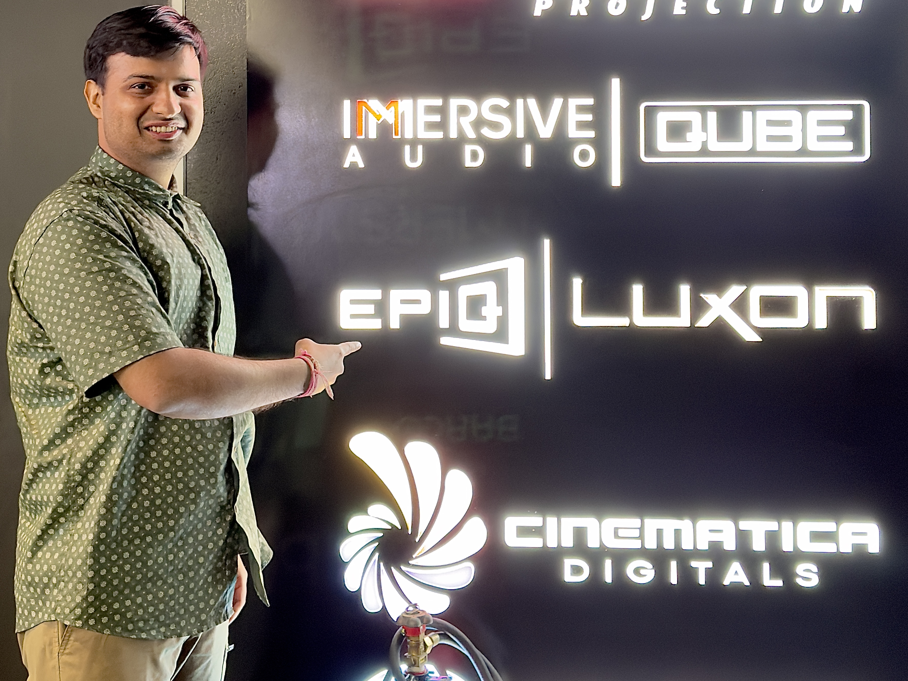
My trip from Chandigarh to Hyderabad in April 2026 was planned for exactly 3.5 days. My main goal was to watch the movie Michael and The Mummy at the AMB and Prasad's HDR by Barco screens and the Allu Cinema's Dolby Cinema screen. By that time, the movie Dhurandhar: The Revenge was already out for over 1 month. It had been 5 weeks since its release. Even though it was a massive hit, it was removed from all the big premium screens. It was gone from Dolby Cinema, gone from HDR by Barco, and gone from all IMAX screens outside of Hyderabad.
But by pure chance, there was still 1 show left on a premium screen. That screen was the EPIQ Luxon at AAA Cinemas. What happened there became the greatest cinema experience I have ever had.
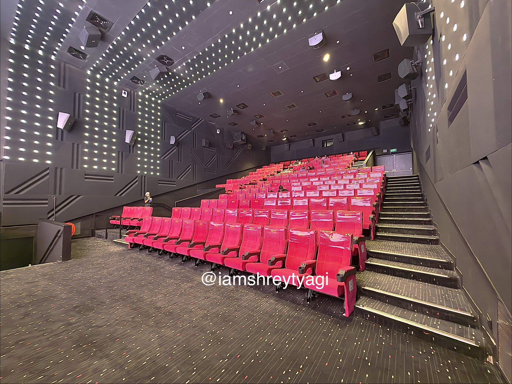
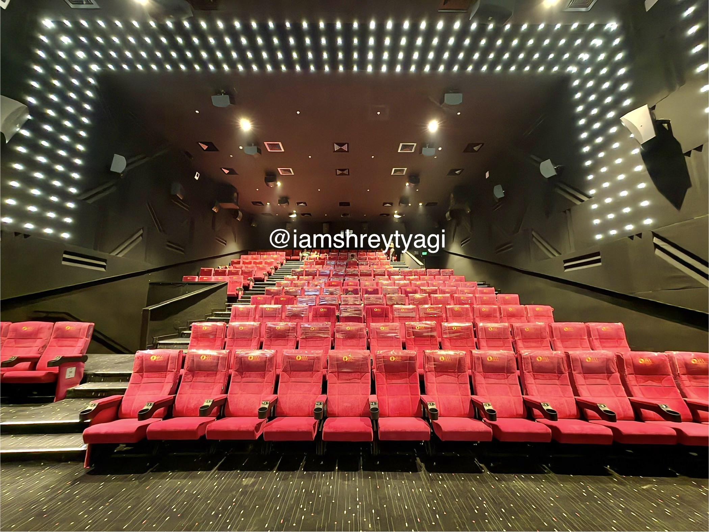
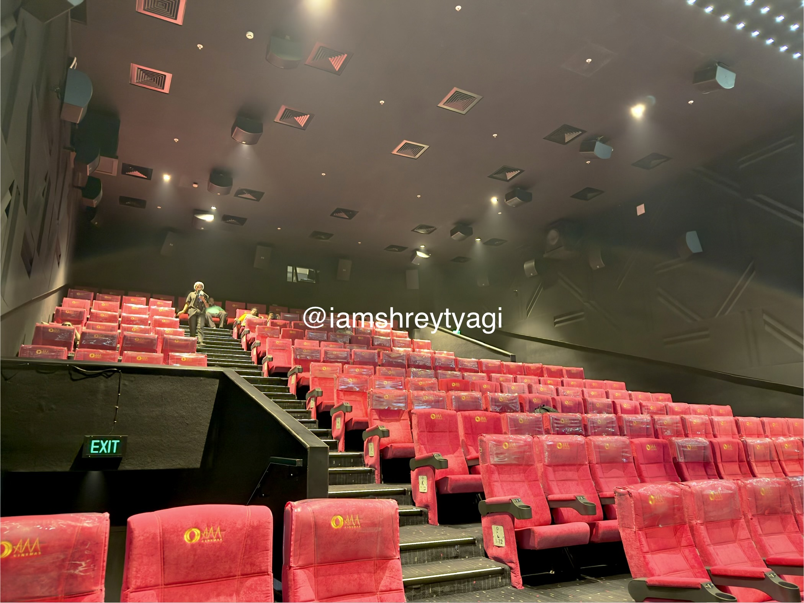
The EPIQ Luxon screen is very different from normal cinemas. It does not use a projector and a normal white screen. Instead, it uses a big LED panel. It is 10 meters wide. It has a flat aspect ratio of 1.90:1, and its resolution is 4096 by 2160. These screens are very rare in India. There are only about 5 of them in the whole country. Apart from this EPIQ Luxon in Hyderabad, there is Swagath Onyx in Bengaluru, another ONYX as an INOX Dine-in venue at M5 Ecity Mall in Bengaluru, 1 Onyx in Mumbai, and 1 Onyx in Delhi.
The biggest benefit of this LED technology is the picture quality and brightness. The pixels do not turn off individually. However, the dimming zones are so precise that it acts almost exactly like pixels turning off. This creates pitch-black darkness and infinite contrast. Not even Dolby Cinema or HDR by Barco can match this level of contrast because they still use projectors.
I had seen LED screens before. My first time was watching the dark movie Nosferatu in 4K at the Delhi Onyx. I was very impressed. Then I saw a small sample of Pushpa 2 and was amazed by the colors, brightness, and sharpness. After that, I saw the full 4K print of Ramayana on an LED screen. I kept saying for days that IMAX was nothing compared to it.
However, those older Onyx screens had many problems. The sound was just normal 7.1 sound, not Dolby Atmos. The speakers were average quality with no clarity and zero bass. There were no height speakers. The seating was not steep. You had to look up at a bad angle, and the seats were just average. They also could not play HDR content. This is because they do not have mastering facilities, the staff is not very technically aware, and they do not get HDR content or the license for it. EPIQ Luxon fixed every single one of these problems.
The seating here is nicely steep, heads will never block your view. You don't need to look up even if you are sitting in the 5th row. The seats themselves are decently plush and comfortable.
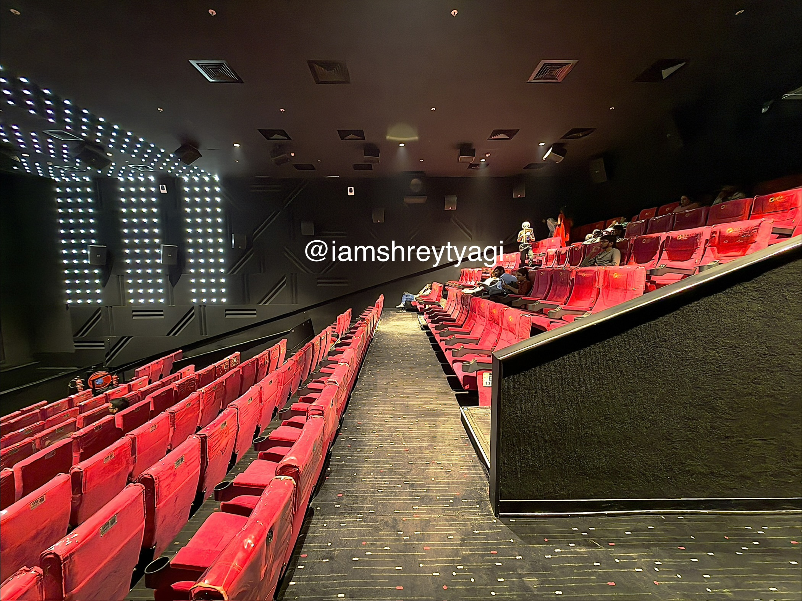
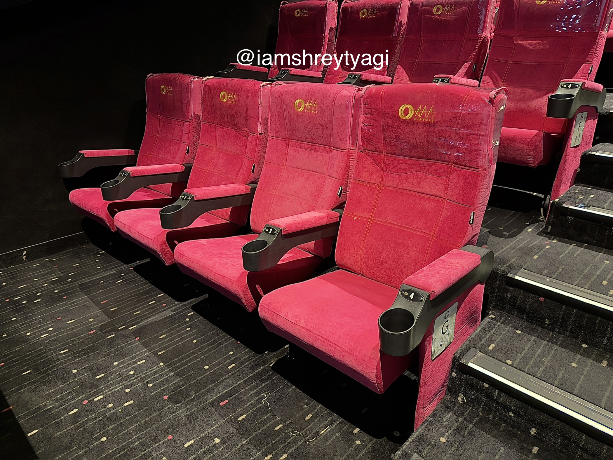
The team at EPIQ is amazing. They master their own Digital Cinema Packages or DCPs whenever possible, especially for Indian movies, to provide the best HDR content. The most special detail, which I did not know at first, is that the HDR by Barco format is 100 percent compatible with the EPIQ Luxon LED screen.
Sometimes there are licensing issues. Big studios like Warner Bros and Universal do not give licenses to play Barco HDR files on LED screens because they want to protect the director's intent. Barco HDR is a special proprietary format made for projectors. But sometimes EPIQ gets permission, like they did for Project Hail Mary, and it looked wonderful.
For Dhurandhar: The Revenge, they were actually playing the Barco HDR DCP. This was the exact same file mastered for Prasad's and AMB cinemas. They did not label it on the BookMyShow app to avoid any legal or licensing troubles, even though they were running it with permission. Because it was hidden, I had no idea.
My friend Rohith Kumar told me they were playing the HDR by Barco DCP. I completely refused to believe him. He tried to convince me 3 or 4 times. Finally, he got solid proof from the cinema's programming team. Only then did I believe him.
I sat in the 5th row, which is the J row, because I wanted to closely experience the picture quality. From the 5th row, it is very easy to see if a movie is 2K or 4K. As soon as the movie started and the text appeared on the screen, there was no doubt. It was a true 4K DCP.
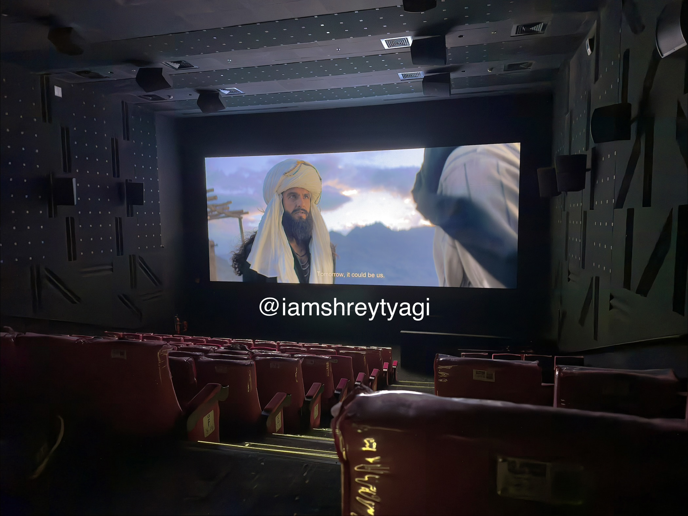
I had previously seen movies from the 4th row at PXL Mohali. I remember how the text there looked blurry and low-resolution. But here, the text was hyper-sharp. Because the screen had infinite contrast, the background was at a perfect zero nits of brightness. The white text was so bright and its edges were so sharp that it looked like someone had physically pasted a sticker on the screen. It was that realistic.
Then the first scene opened. It was a scene where Ranveer Singh stands with his family to take a photo. My condition instantly worsened in a good way. My breath stopped. I could not breathe properly. I did not say much because I was speechless. I just made sounds of amazement like "Oooooh teri... sssssss. Awwwww" and "Arey baap re". I started laughing and muttering to myself. I lost all control of my senses and felt like I had gone crazy. I love picture quality, high bitrates, and HDR. So seeing this level of detail, camera grain, and perfect colors was like finding pure gold for a person like me.
The camera used for this movie was the ARRI Alexa 35. It is a top-tier camera with better image quality and dynamic range than the IMAX-certified ARRI Alexa LF. They also used anamorphic lenses. This means they used almost the full image sensor area. Because of the style in which the movie was shot, it was not possible for every shot to look equally sharp. Some portions were soft because of the stylistic lens choice. But there were many shots that were completely in focus. Whenever the shots in focus came, the sharpness was incredible. Even when parts were not in focus, the picture quality had a very high-fidelity texture utilizing the 4K resolution and high bitrate very nicely.
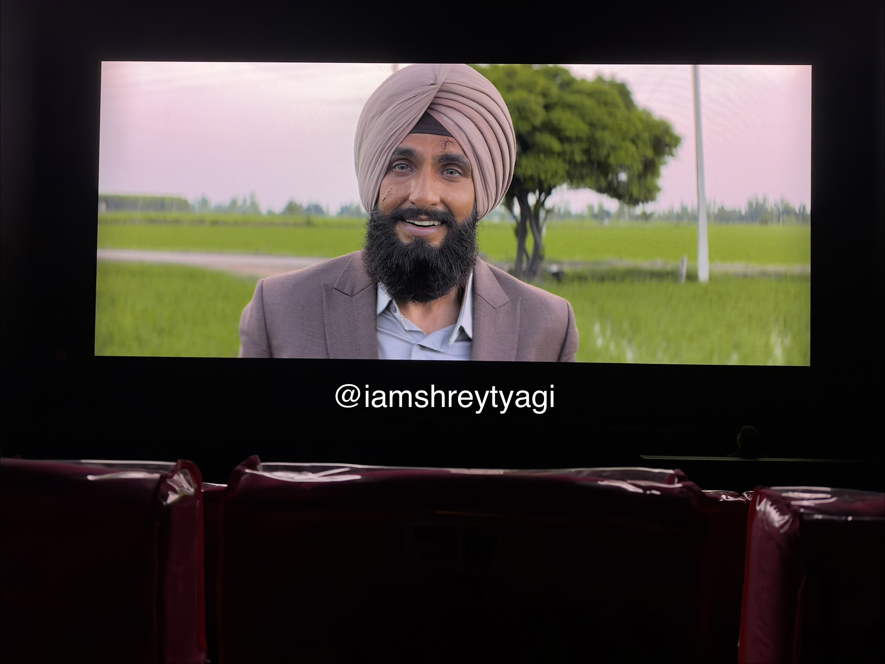
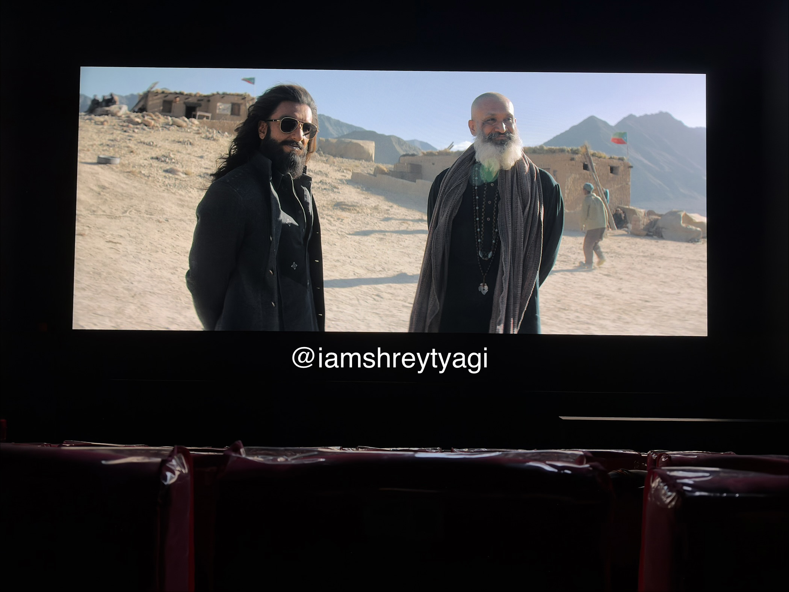
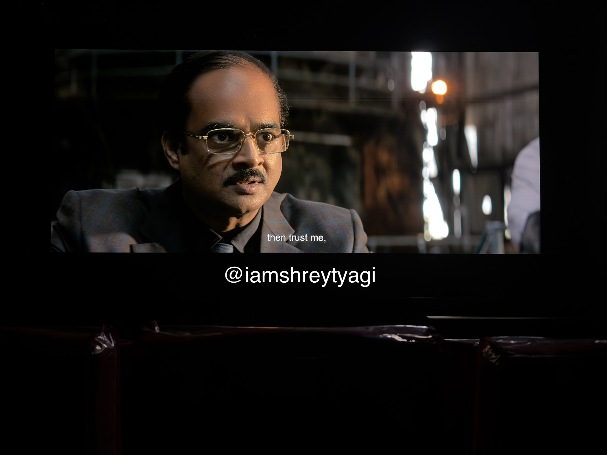
One of the most important things for picture quality is the bitrate. Bitrate means how much data is given to the image. A normal 2K DCP for Dhurandhar: The Revenge playing across India was only 122 Mbps. But the file I was watching was a massive 880 GB file with a bitrate of 500 Mbps.
To help you understand how crazy this is, here is a simple breakdown of the sizes without using complicated tables:
Please note that we are talking about overall average bitrates. Some frames can go even much higher in size, and some can go low if the frame does not need it. For this 880 GB version, we can assume some frames could be even 4 Megabytes or higher during high detail scenes.
That is a very high-quality image, almost equal to lossless quality. Because the frames change at 24 frames per second, it is impossible for a human eye to tell the difference between this and the raw uncompressed camera file. I was watching the movie in the exact same quality that the camera originally captured.
The screen also played at an amazing brightness. Normal cinemas are recommended to target 48 nits of brightness, but they usually only manage 30 to 35 nits. This EPIQ Luxon screen had a peak brightness of 300 nits. Seeing bright specular highlights at 300 nits alongside pitch-black shadows creates the ultimate HDR experience.
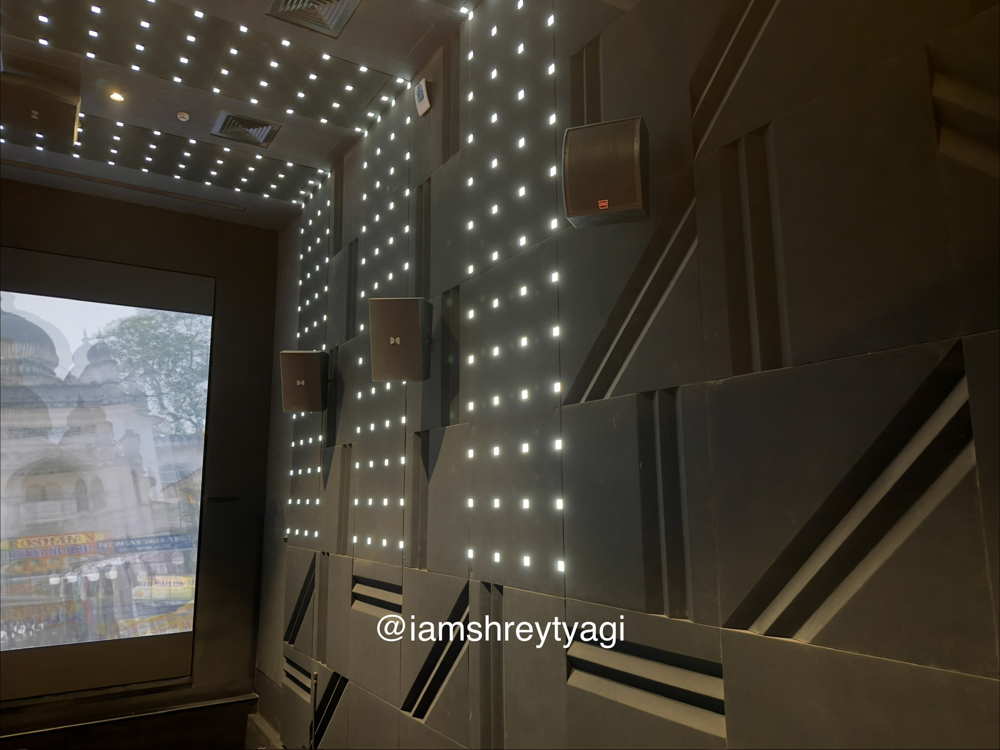
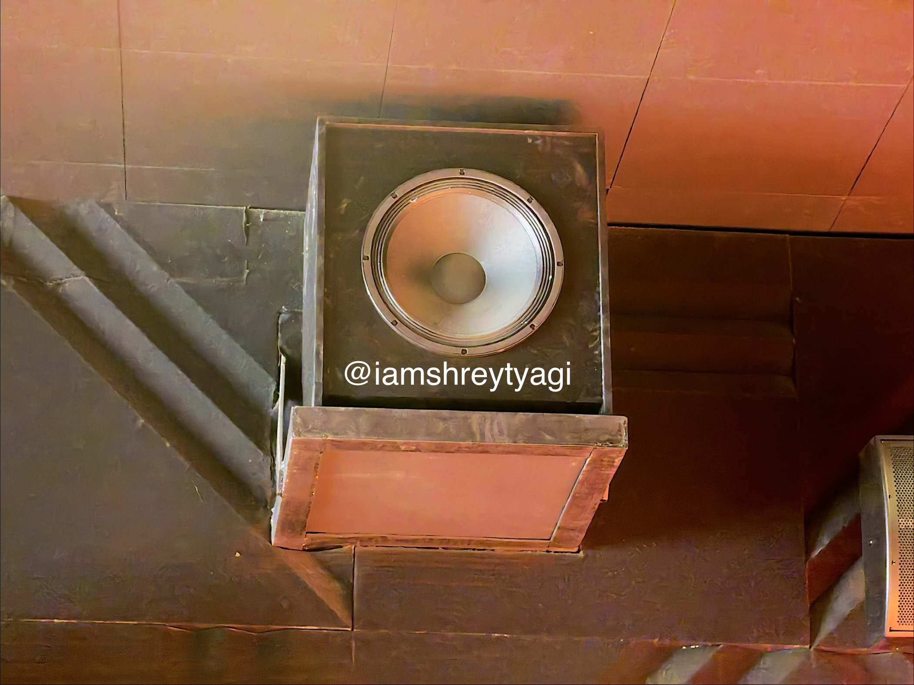
The picture quality was only half of the magic. The sound was a perfectly tuned Dolby Atmos system. They used the maximum premium speakers (all are Dolby's own SLS branded speakers), and everything was aligned perfectly. The bass was incredibly strong but also very clean and tight.
When bass is bad, it sounds boomy and echoes. Some frequencies sound too loud while others are muted. Here, every bass frequency was perfect. It felt like sitting in a high-quality audio studio or listening through very expensive headphones. Out of all the cinemas I have visited, only the Dolby Cinema in Pune came close to this. I experienced very tight and perfect bass in Pune during an F1 screening and some scenes of Dune. EPIQ Luxon managed to replicate that exact same expensive sound experience.
Even though I was sitting very close to the screen in the 5th row, the Dolby Atmos height effects were ultra-clear. The sound objects moved perfectly around and above me. It was not a static sound mix. The movie makers designed the sound to move, and the auditorium translated it flawlessly.
There are subwoofers in the surround also. And even they are very powerful. So bass is not just coming from the front, but also attacking you from all around you.
When I combine the best audio experience of my life with the best picture quality of my life, the result was pure heaven. During the "Aari Aari" song and action scene featuring Ranveer Singh, I reached a level of pure joy. It felt almost like a combination of an orgasm and deep emotion happening at the same time. I was so happy that I could not catch my breath. My breathing became heavy, my heart started beating very fast, and I started crying. My voice cracked. Tears literally came to my eyes, and drops of tears finally fell from my eyes.
Later in the movie, there was a song titled "Didi". That scene showed dry mountain valleys, stones, and a large crowd of people. The visual details were so high in that scene that I got emotional and cried all over again.
I kept thanking God again and again. I realized that the show I was watching on that Thursday was the absolute last show of the movie in Barco HDR at EPIQ Luxon. It was not going to play the next day. I felt like I was experiencing a piece of history. I knew that whenever this movie comes on TV, OTT, or Blu-ray, the quality will never match what I was seeing. The people of the world watched it in 2K. Some lucky ones saw it in IMAX, Dolby Cinema, or Barco HDR projectors. But I was watching the absolute highest bitrate print in the world on one of the best picture quality cinema technologies in the world.
When the interval happened, my emotions were completely overflowing. I turned to my friend Rohith and praised him endlessly. I told him I was so thankful. I told him I would do whatever he asks. I said I would give my life for him. I even told him he was above God for me at that moment. I know I said crazy things, but I was just so emotional. I had to admit that I only got this experience because Rohith pushed me to believe him.
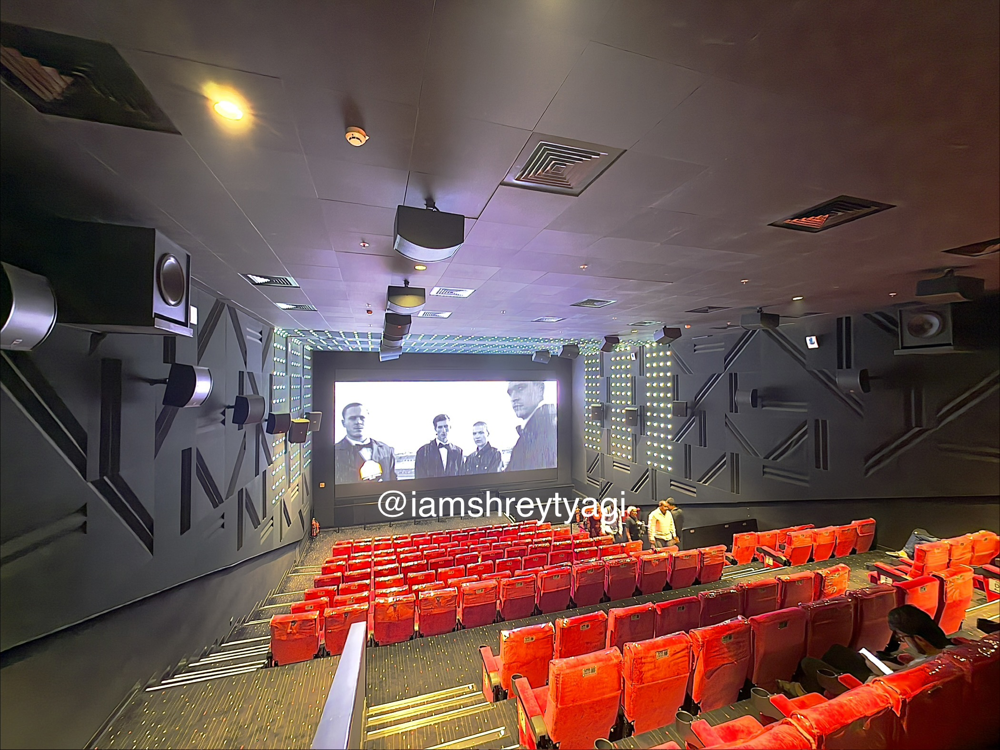
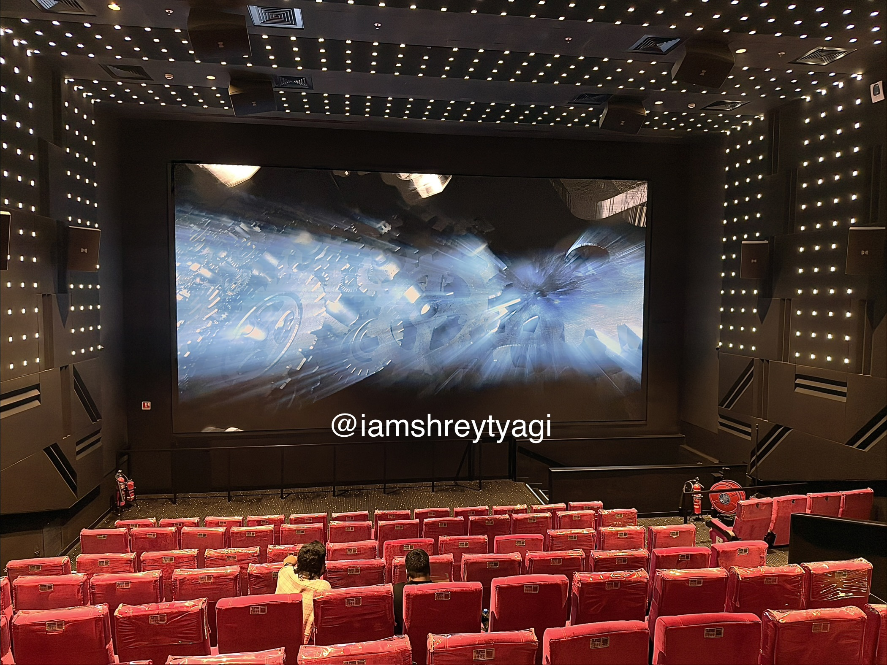
After the interval, my eyes were glued to the screen. I could not look away. The HDR really shined in specific moments. Whenever there was a bullet spark, a bursting firecracker, clouds in the background, a shiny light, a reflection on a car, a reflection on someone's glasses, or splashing water, the screen would shine beautifully. It was not just blindly bright all over. The overall brightness was normal, and only the shiny parts hit you with extreme brightness.
Sometimes the brightness was so strong that it made people jump in their seats. My friend Chaturvedi ji was sitting on my left. Bad words came out of his mouth due to genuine excitement and shock. The same thing happened to my friend Rahul sitting on my side. He arrived a little late and originally said he had no interest in the movie. But once he sat down, he did not move an inch. Bad words also came out of his mouth due to pure shock and excitement. He admitted that the experience was totally worth it. Venkat Kishore was also with us, watching the movie with a huge smile on his face. We are all cinephiles, and we were all smiling and enjoying it deeply.
Two specific scenes stood out the most:
I must explain that AAA Cinemas stands for Asian Allu Arjun. This company is a collaboration between Asian Cinemas and Allu Arjun. AAA is located in the Ameerpet area. There is another cinema just called Allu Cinema located in Kokapet, which is only run by Allu Arjun, but this one is different.
This cinema is a hidden gem. People always praise bigger cinemas. Yes, big screens like PCX Screen 6, Dolby Cinema with its 75-foot screen, and IMAX have their own charm because of the huge field of view. But EPIQ Luxon leaves them far behind in picture quality. If you look back at the second-best screen in the race for picture quality, it is so far behind that you cannot even see it.
The AAA Cinemas team is also very honest. They are one of the most transparent cinema companies in India. The manager told me they want people to know exactly what technology they are paying for. Outside every auditorium, they put clear logos showing if it is a projector or LED, if it is 4K, and exactly which company made the speakers.
The cinema has a very good lobby area. Instead of the royal or luxury theme of PVR, they use a modern black theme design which is unique and minimalist. It looks very cool. The food is also great and cheap. I ate a white sauce pasta there, and it was delicious. The staff is extremely polite and helpful.
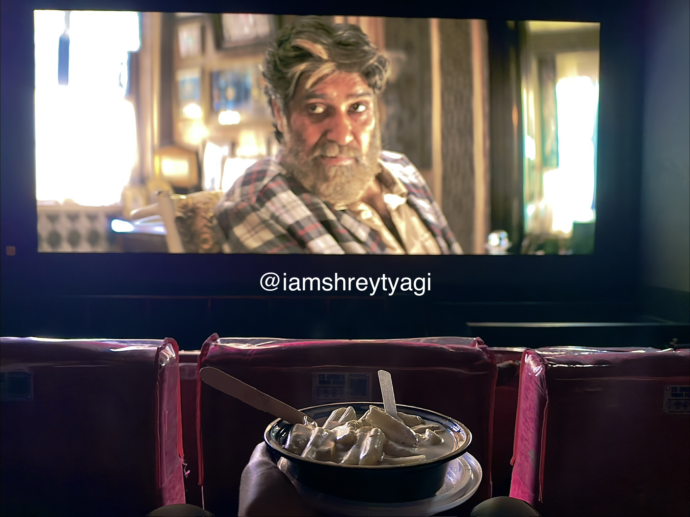
The combination of the EPIQ brand and Asian Cinemas is incredible. EPIQ focuses heavily on perfect auditorium design and makes their own DCPs. They care about content. When you mix their auditorium design and content care with this LED technology, it creates an unbeatable experience.
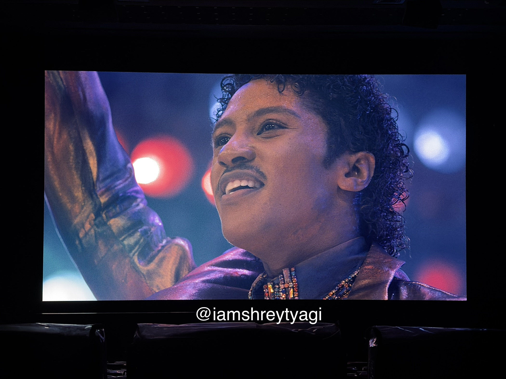
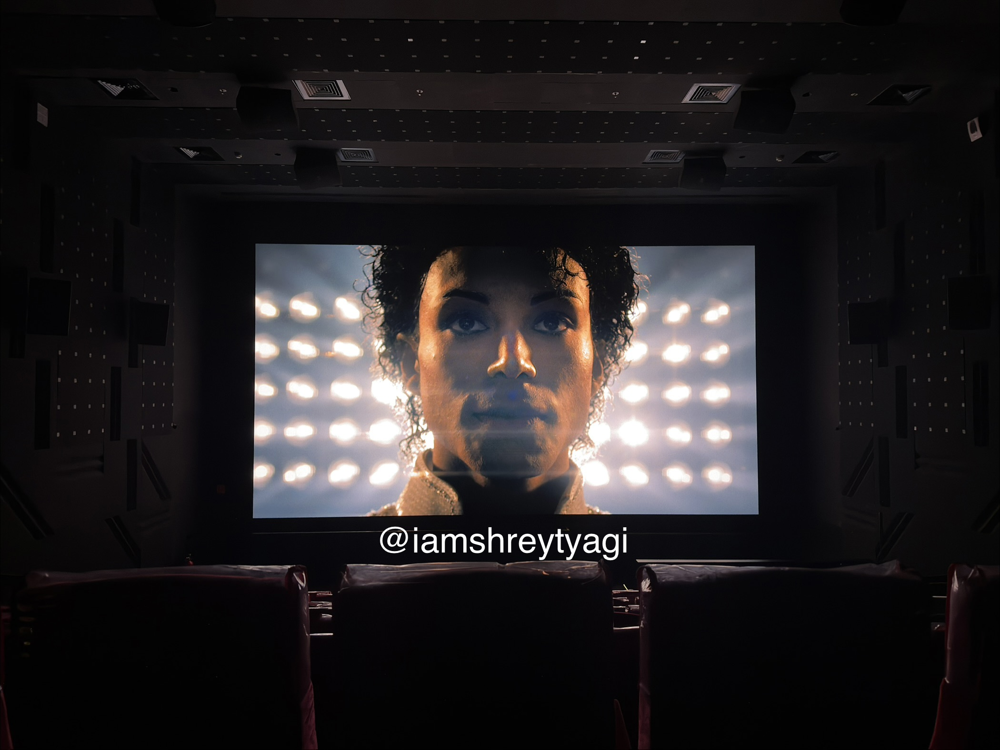
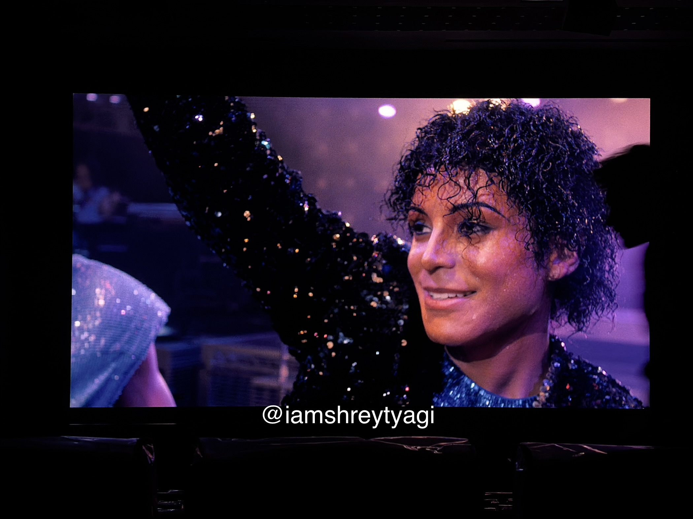
A day after watching Dhurandhar: The Revenge, I went back to watch the movie Michael. Because it was a Warner Bros movie, they did not get permission to play the Barco HDR file. They had to play the normal SDR version.
Even in SDR, the LED screen defeated everything else. An SDR movie on this LED screen looks better, sharper, and has better contrast than the HDR versions playing on Dolby Cinema or Barco HDR projectors. The technology itself is just supreme. If you ever get a chance to watch a movie here, just go. Do not worry if it is HDR or SDR. Both will look incredible.
There are no dead pixels, no lines, and no screen imperfections at all. However, there is 1 tiny flaw. The bass is so incredibly strong that it shakes the actual physical frame of the screen.
During heavy bass moments in Dhurandhar: The Revenge, the left side of the frame where the subwoofers are hung started to vibrate. The speakers themselves do not distort, but the extreme power makes the metal frame rattle. It causes a slight rattling noise. When bass is strong enough to shake your seats, your windows, and the earth, the screen frame simply cannot handle the power. That is the only minor issue.
Unlike projector screens, LED panels are not acoustically transparent. So it is not possible to place stage speakers behind the screen. Therefore, stage speakers are placed on the sides and bottom of the screen. Due to that, it is not possible to make the viewing experience wall to wall and edge to edge. There are always some space (around 1.5 feet) between screen and walls/floor/ceiling. This can look unpleasant to those who love immersive experiences. But honestly, once lights are off, due to extreme contrast, it's not noticeable.
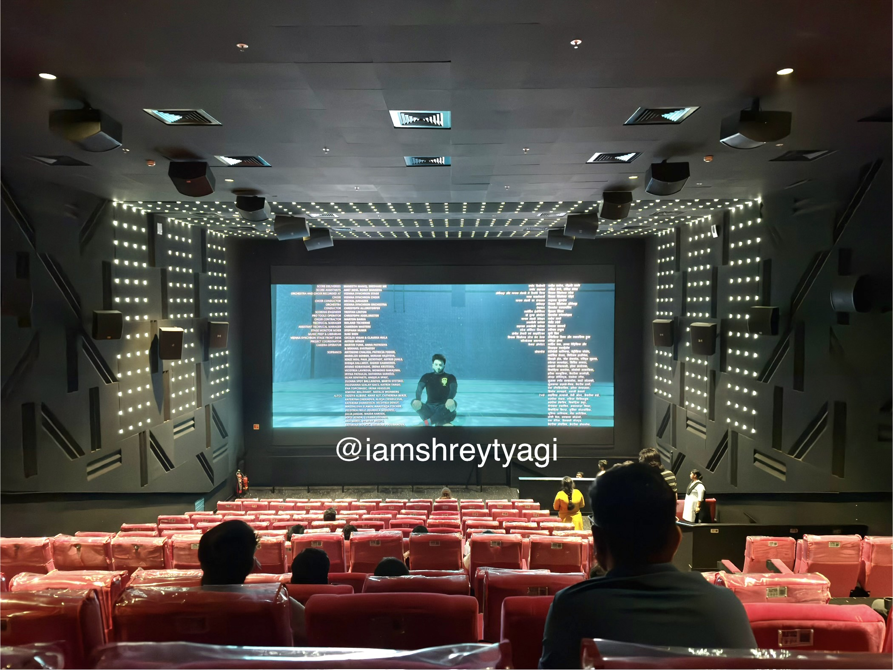
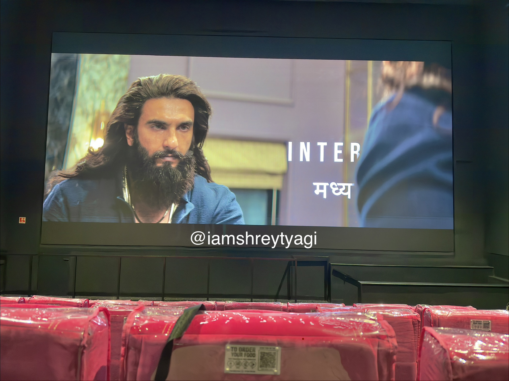
I have watched movies on Onyx, ScreenX, and even documentaries on IMAX 15/70mm film formats. But this experience crossed every boundary. My expectations the first time watching this movie were very high, so I rated it a 4 out of 5. After seeing it a second time in IMAX, I raised it to 4.5. But watching it here in 4K HDR with studio-grade Dolby Atmos deserves an 8 or 9 out of 5. It breaks the normal rating scale.
I want to say a huge thank you to the managers of the cinema, Jyesth Narang, the executive director of Asian Cinemas, the director Aditya Dhar for making such a movie, and the team at Prasad's Chennai who did the HDR grading and made this DCP. You have given me a core memory that I will keep alive until the day I die.
Dhurandhar: The Revenge is a movie that will be remembered by the world for centuries because of the global records it has broken. And I got to watch the highest quality DCP of this movie (in the world) in the highest quality cinema format in the world (that was playing this movie). Yes, what I experienced was the most ultimate supreme way to experience this movie, it cannot get any better than this in the entire world for this movie.
My friend Anurag also watched the HDR version of Baahubali: The Epic on this exact screen. I had not told him about my feelings, but he told me he also became very emotional by the time his movie ended. This screen just does that to people who love cinema.
I spent money to travel from Chandigarh to Hyderabad, stayed for exactly 3.5 days, and traveled back. But those 4 hours sitting inside the EPIQ Luxon screen completely recovered the cost and effort of my entire trip. Everything else on the trip was just a bonus. I am filled with deep gratitude, and I will never forget this.
Disclaimer: I wrote this article and used AI assistance for grammar review, and improving sentence structure and clarity. The ideas, research, and viewpoints are my own.